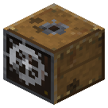

Механический лесоруб


Валит лес 5×5 перед лицом, бревно за 2 с. Топор в слот (1 прочности за бревно). Саженцы — руками. Вал 4 л.с.
Ставь лицом к делянке: рубит квадрат 5×5 вплотную перед лицом, от своего уровня на 32 блока вверх, сверху вниз, бревно за 2 с на полных оборотах. В слот — любой топор: 1 прочности за бревно, сломался — пила стоит. Берёт всё, что падает бревном: ваниль, тёмный дуб 2×2, деревья Forestry любой толщины. Листву не трогает (опадёт и уронит саженцы, у Forestry — с генами), саженцы не сажает — это руками. Брёвна — в сундук сзади, иначе снизу: дальше воронкой в пилораму или пиролизную печь. Вал 4 л.с. Постройку из досок или брёвен в зоне тоже срубит.
Параметры
| Эпоха | 2 — Пар и механика |
|---|---|
| Многоблок | нет |
| Привод | вал 4 л.с. |
| что делает | валит лес в квадрате 5×5 перед лицом (logWood: ваниль, тёмный дуб, Forestry), сверху вниз; топор в слоте — 1 прочности за бревно; листву и саженцы не трогает; сдаёт назад/вниз (A31) |
| энергия на входе | вал 4 |
| из чего | стальные и железные листы, бронзовые шестерни, железный вал IC2 |
Числа
| механический лесоруб | 4 л.с. |
|---|
Кто кормит
- вал ← Паровая машина, Паровая машина высокого давления (трансмиссия)
Кого кормит
- машины Zavod её продукт не едят
Как устроено (из кода)
Механический лесоруб (A31, эпоха 2): маятниковая пила на валу валит лес перед собой, пока крутится вал. Зона - квадрат SIZE x SIZE перед лицом машины (вплотную, по центру), от уровня машины на HEIGHT вверх. Рубит всё, что падает бревном по словарю logWood: ваниль, тёмный дуб 2x2, деревья Forestry любой толщины. Листву НЕ трогает (опадёт сама и уронит саженцы, у Forestry - с генами), саженцы НЕ сажает - это руками (мультиферма Forestry - эпоха 3). Сверху вниз, по одному бревну за TICKS тиков при полных оборотах. Расходник - любой топор в слоте 0: WEAR прочности за бревно, сломался - стоит. Брёвна сдаёт в инвентарь сзади (с тыла лица), потом снизу; можно и воронкой/трубой. Слоты: 0 топор, 1-4 выход.